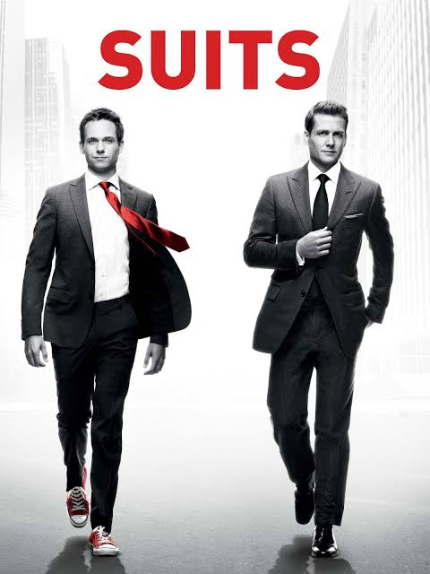

Suits

Suits é uma série de drama jurídico baseada em um grupo de advogados que trabalham em uma firma de advocacia.
Mike Ross (Patrick J. Adams) é um garoto que abandonou a faculdade de direito mas, brilhante como é, consegue uma entrevista com o respeitado Harvey Specter (Gabriel Macht), um dos melhores advogados de Manhattan. Quando percebe o talento nato e a memória fotográfica do garoto, Harvey o contrata e, juntos, eles formam uma dupla imbatível. Mesmo sendo um gênio, Mike ainda tem muito a aprender sobre o Direito. E mesmo sendo um advogado tão competente, Harvey irá aprender com sua nova dupla a ver seus clientes de outra maneira. A princípio, ambos mentem para que Mike possa trabalhar na firma Pearson Hardman, um escritório de advocacia com uma política de aceitar apenas ex-alunos da Escola de Direito de Harvard. Além da parceria no âmbito profissional, Harvey e Mike criam um forte laço de amizade um com o outro à medida em que resolvem novos casos todos os dias. Rachel Zane (Meghan Markle) é filha de um dos advogados mais influentes da cidade e, apesar de ter uma vaga garantida na empresa do pai, resolve trabalhar na Pearson Hardman, onde se aproxima de Mike e Harvey.
Informações principais
- Gênero: Drama jurídico, comédia dramática e suspense.
- Ano de lançamento: 2011
- Temporadas: 9
- Episódios: 134
- Criador: Aaron Korsh
Curiosidades
- A série se passa em Nova York, mas foi gravada em Toronto, no Canadá, por motivos de custos e benefícios fiscais.
- O nome original da série era "A Legal Mind" antes de mudar para Suits.
- A personagem Jessica Pearson (Gina Torres) foi escrita inicialmente para ser um homem, mas o estúdio pediu a alteração para um papel feminino